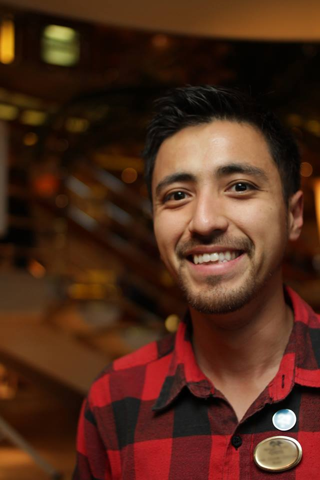

Professional Chef, Web Programming Student
Personal Information
- Professional cook with onboard international experience in the cruise industry. Focused in the customer experience, pursuing of the highest possible standard of preparations with creativity, always promoting a responsible use of the available resources and a good teamwork environment.
Educational Information
- Universidade do Vale do Itajaí (Itajaí, Brazil) - 02/2005 to 12/2007
- Degree in Culinary Arts – International Chef de Cuisine
Professional Experience
- Chef na Van - 2014-2016
- Executive Chef
- Menu creation of the hamburger and fast food franchise, including weekly rotation of new items in service delivery, a la carte and food trucks.
- Management and training of crew in diverse functions involving mise en place production of items in the restaurant.
- Responsible for the shopping and storage segment, reducing in a period of one year 15% the costs of products even with the increase of sales.
Hobbies and Interests
- Running
- Dogs
- Mixology
- Health
- Travelling